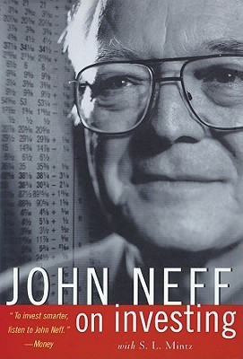

约翰·聂夫（John Neff，1931—2019）在1964年至1995年间担任先锋温莎基金（Vanguard Windsor Fund）的基金经理，三十一年内将基金规模从数百万美元扩张至成为彼时全美规模最大的股票共同基金。在此期间，温莎基金累计跑赢标普500指数二十二次，年化回报率13.7%对比指数的10.6%，初始投资者的本金增长了57倍。这一业绩记录不仅令聂夫跻身华尔街最顶尖基金经理的行列，也使他的投资方法——低市盈率策略——成为价值投资学派最具代表性的实践案例之一。1999年，他与财经记者S. L. 明茨合作完成《约翰·聂夫的成功投资》，系统梳理了这套方法背后的逻辑与演变。
聂夫刻意拒绝"价值投资者"或"逆向投资者"的标签，他更愿意被称为"低市盈率投资者"。他的方法核心是寻找市盈率处于市场平均水平40%至60%之间、年均盈利增速在7%至20%之间、同时有稳定股息支撑的股票。他在书中归纳了一个他称之为"总回报/市盈率"的衡量指标，将盈利增速与股息收益率之和除以市盈率，以此筛选出被市场低估但基本面扎实的标的。他的选股清单上长期出现的是那些被主流市场冷落、每日更新的"创新低"名单中的公司——他称那是"市场的旧货铺"（the dusty rag and bone shop of the market）。书中第七章是全书最具参考价值的部分，通过逐季回顾温莎基金三十余年的持仓决策，以实际案例诠释了低市盈率策略如何在不同市场周期中发挥作用。
聂夫在书中也坦率记录了他所经历的错误和市场逆境。1970年代的滞胀环境、1987年的股市崩盘、1990年代初储贷危机对金融股的冲击——他如何在这些时刻坚守策略，又在哪些时刻调整了判断，构成了全书最真实也最具教育意义的部分。他提出的"当你想要炫耀时，大概是时候卖出了"（Successful stocks don't tell you when to sell. When you feel like bragging, it's probably time to sell.）折射出他对市场情绪的深刻理解。他拒绝将自己的成功归结于某种神秘天赋，而是反复强调：低市盈率策略之所以有效，正是因为大多数人在情感上难以长期坚守被市场嫌弃的股票。
《约翰·聂夫的成功投资》的中文版由机械工业出版社于2018年出版。对于中国读者而言，这本书的意义不仅在于提供了一套可操作的选股框架，更在于它呈现了一位真正长期践行某一原则的投资者的完整职业弧线——包括他如何在漫长的岁月中应对市场的质疑、媒体的忽视乃至偶尔的失误。聂夫并不是一个提供抽象理论的学者，而是一个在市场中摸爬滚打了三十一年、每个季度都要向持有人交代的基金经理。这种来自实战的朴素与诚实，使本书在众多投资经典中自有其独特的分量。